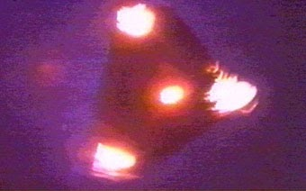
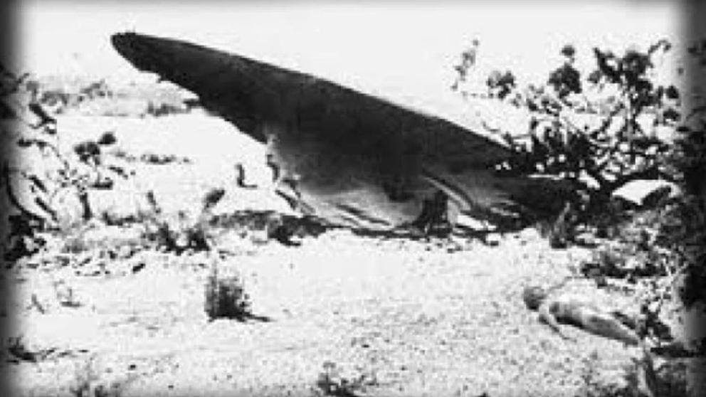
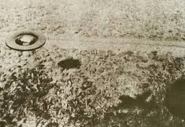

Entre los años 1989 y a mediados de 1991, Bélgica registró 450 avistamientos de ovnis, donde más de 15.000 personas aseguraron haber visto objetos voladores negros de forma triangular con extremos redondeados brillantes de un gran tamaño llegando a los 10 metros, desplazandose a 100 km/h, los cuales emitian un extraño zumbido.

El caso Roswell, fue un incidente ocurrido el 2 de julio de 1947, en Roswell, Nuevo México, donde se pudo percibir hallazgos de un objeto desconocido en el rancho de un hombre llamado Mack Brazel. El diario “Roswell Daily Record”, luego de unos días pública que el objeto desconocido era del tamaño de una mesa, tenía caucho de color gris, papel de plata, cintas adhesivas con diseños florales y varillas de madera.
Sin embargo, se descubrió que el objeto era usado por Estados Unidos para con el poder espiar a la URSS.
La noche de el 30 de Julio de 1965, se sintió un ruido en el cielo de Puerto Montt y sus alrededores, en el sector de Pelluco, un grupo de personas se encontraban en un velatorio (Carolina Proeschle), este familiar había fallecido hace 2 días en un accidente automovilístico. Estos decidieron salir del lugar establecido, quedando sorprendidos ante el suceso: “Sentimos ruidos, habían unas luces que parpadeaban en las ventanas, cuando decidimos salir presenciamos que a unos 80 o 100 metros aproximadamente, se veía una nave ovalada. Mostraba una luz resplandeciente, de colores violeta y naranja, el ovni se desplazó hacia la ciudad, donde fue visto por otras personas”, el objeto quedo inmovil en el aire, con grandes luces potentes que atraían a cualquier espectador, luego se posó en una quebrada cerca de Pelluco. Al otro día la gente espectadora fue a analizar el lugar del acontecimiento, entre esto el pasto estaba quemado, había árboles arrancados del lugar, y una erosión en la tierra que era casi perfecta.
Una semana después una comisión científica norteamericana visitó este lugar, y ratificaron que los platillos volantes pueden crear un espacio a su alrededor de un campo antigravitacional. Fue así como este acontecimiento marcó la ciudad y los diarios.
Ovnis en Punta Arenas, Chile: En la penúltima semana de Agosto, los testigos de este suceso dieron a entender que este comenzó siendo una estrella, cambiando así de diversas formas, su aspecto fundamental era brillar. Este sector es considerado como una “zona caliente” debido a que estas situaciones se han establecido varias veces, este objeto o suceso cambiaba de colores, por lo que era raro que fuera un objeto de transporte como lo es un avión, su velocidad era muy rápida, haciéndose destacar en el cielo. El testigo “Marco Rivas” afirma que este adopta una forma de un platillo, con una potente energía.
El primer ministro británico prohibió en dos ocasiones la difusión de noticias que evidenciaban la presencia de OVNIS por parte de pilotos durante la Segunda Guerra Mundial. Se rumoreó que Churchill conocía más de 200 casos y su decisión de ocultar la información fue con el fin de evitar el terror masivo.

En el año 1957 varios conductores de Texas vieron como sus vehículos se pararon tras encontrar un objeto brillante en forma de huevo. Solo volvieron a ponerse en marcha cuando el presunto OVNI pasó volando por encima de ellos. La investigación concluyó que fue debido a una tormenta eléctrica y una centella.